This is a report on my internship at Lunatech. The internship began in early September and ran for 6 months. The product of the internship was SwipeTable, a JavaScript library focused on mobile table viewing and navigation.
When looking for internship assignments, my search was not aimed at the competencies I had to prove to be proficient in. Instead I looked for interesting opportunities and developed my goals afterwards.
When I applied for information from Lunatech, I also asked at 4 other companies for information and possible positions. Some responded with information, some didn't have an open spot anymore, but Lunatech were interested and wanted to meet.
At Lunatech I was interviewed by Egor Kloos, who would also be my supervisor for the internship. The interview went well and next thing you know we're planning the assignment, getting contracts signed, etc.
These are the goals I started out with:
The company where I ran my internship was Lunatech. Lunatech started out as a research company and transitioned over the years to a consulting and services company. One of their primary clients is UPC, for whom they handle some of the information flow for shipments.
At Lunatech my supervisor was the only front end developer. The rest were mostly developers, either back end or working on features to implement. Developers that were on the floor I was on, did know about some front end stuff because they worked more on implementing interfaces. However, they were still more on the technical side, from my observations.
Below is the original assignment:
Intern assignment FRONT-END | LUNATECH
The intern will perform the tasks of a front-end developer and acquire the skills and knowledge needed for this and other related positions (i.e. web developer).
The intern will focus on:
- Javascript (optionally with: coffeescript, dart, etc)
- Integrating UI and backend and dealing with UX issues.
- CMS and online tooling. (content and server related dashboards)
- Assisting on running (mobile) web projects.
Lunatech will provide assistance and support so that the intern can have a functional deliverable of a personal project to demonstrate.
Assignment: A new type of data grid.
At the end of the assignment there should at least be a full first version of a open sourced script on Github.
Unique selling points
- Small memory footprint
- Prototypal inheritance (see point 1)
- Stand alone script. (No jQuery or Bootstrap, see point 1)
- Modern browsers. (including mobile webkit, see point 1)
- High performance (see point 1).
Tasks
- Research the type of construction required to get high performance and or easy maintenance.
- Prototypes (Paper, Keynote/Powerpoint, HTML)
- Set up integrated mockup on a web server / database. Twitter Bootstrap 3 Foundation 4 MAMP, Playframework / Tomcat MySql, NoSql, Postgress, MongoDB etc.
- Pick a licence (MIT, Apache, GPL ?)
While this was originally the plan, things have changed during the course of the project. Due to the amount of time spent on the JavaScript Data Grid Plugin, other tasks didn't get any attention. I did not work with Twitter Bootstrap or Foundation, nor did I use any database technologies. This wasn't an issue though because from early on the focus was on the JavaScript side. The other tasks were possible things I could be working on because I was worried the main assignment wouldn't be enough. The worry was unfounded. There were plenty of things to do on the library and there is still more that can be done after the internship is finished.
Things that took more time than expected:
The use case was the starting point for the assignment. From the use case I was able to determine the requirements, personas and scenarios. What follows is the use case verbatim.
Use case data grid plugin It's important for many automatisation applications to oversee large amounts of datasets.
At Lunatech we create such applications for a number of our customers. However, the usage of such data grids tends to only run on the desktop. In fact, it is usually recommended to use a powerful desktop.
One of our logistics customers uses shipping data from within the warehouse and therefore need a desktop setup on site. It would be preferable to use a tablet to be able to access this data as portability would be a huge asset. Memory and CPU constraints make this a non-viable option.
To make a light weight web front-end we need to know how to serve and render the data in way that will work on Post-PC devices. How small can we go?
With short description, my part of it, my process and the choices I’ve made, and ‘verantwoording competenties’.
There was a lot of freedom involved in the project. This meant that I had to be very careful about the steps I took and the decisions I made.
The first few days I did as much research as I could so I could discuss things with my supervisor, Egor Kloos. He would be on vacation for 2 weeks after that.
The preliminary research was not focused on requirements, instead I wanted to explore what was already out there and what could be possible. I also tried to deduce any issues I may encounter during the project.
I also started a log of progress during the research, documenting observations. I found that the log was useful within a week of each entry, sometimes 2 weeks.
Once the research was done I started studying JavaScript. I didn't know enough so I went and looked for resources. I spent a lot of time reading articles by Douglas Crockford and watched about 5 hours of him talking about JavaScript. I think he's a great source of information but a bit too opinionated. I would consider it a great start to JavaScript knowledge but I'd advise to look at other sources after that. Some of Crockford's methods can be very opinionated and his JavaScript error checking program JSLint shows this, showing errors where coding style is highlighted rather than programming errors.
When making my first prototype I started with CoffeeScript as it looked simpler to understand. However, I find that it did too much under the hood and I couldn't understand why it did some of the things it did. When compiling back to JavaScript it would abstract functions and variables and it becomes hard to debug. So because I didn't have enough knowledge then, I decided to just stick to plain JavaScript.
During actual development it was mostly me researching for the next feature, discuss with my supervisor, program feature, and testing for performance and usability real quick. That's oversimplifying it of course, different features require differing approaches. If I was working on an animation I would discuss the reason for the animation with my supervisor, research possible methods, then prototype them, test for performance issues, then consult with my supervisor on the animation. This went on until the end of the project.
SwipeTable required an API server so it could be tested and demonstrated. Initially I tried hosting the server at my home computer but I couldn't get remote development working properly. I then did some looking around and tried out Amazon EC2 virtual servers. I could run a tiny virtual server for free while being able to work remotely.
The way the server gets updated is pretty simple, although it takes a little bit of setup. The server is a node.js server, running on nodemon. Nodemon is a node.js program that restarts a server based on file changes. The way I made the files change was to use Dropbox on the server. All of the server files are in a Dropbox folder, so when I make a change while at Lunatech and save it, the file gets changed on the Amazon server via Dropbox. This allowed for a very quick development workflow.
Description
The student can objectively describe the target audience based on research. The student knows which methods and techniques to use to come to concrete user needs.
The student is capable of actively listening during interviews and has a neutral position in reports. The student is capable of defining user tasks, can describe functionality with other developers with a focus on usability, and can categorize the functionalities in differing groups.
The student can fit the user needs within the interface possibilities of the media product.
The student is capable of testing interface proposals at the different stages of the development process and can select the right method to do so.
Progress
I decided early on that the project should have a focus on Usability and User Experience. I would discuss my ideas on the Usability of the project with my supervisor on an almost weekly basis. Topics discussed included: getting the attention of the user, showing the user what could be done, different ways to present functionality.
During the project I couldn't test on the intended users because they would be in France (the case was based on a client of Lunatech). Distance shouldn't be a problem but the language barrier and the fact that it was in a production environment made it difficult to test anything. So instead I opted to periodically discuss possible issues with my supervisor.
Figuring out what the possible issues could be, required occasional research into usability problems with data grids(tables) and smaller interactable viewports. Example: How do you show many columns to the user in a readable way?
Room for improvement
While doing the research I didn't cite any sources. I would read the article, blog or paper and then make notes on what is applicable to the project. Now that I'm writing this report I miss the sources of information. Another drawback is that I can't review the sources again. My perspective now is different than when I wrote the notes, I would like to verify if the source data is still applicable.
Description
The student is capable of prioritizing the user of the finished product during the development process. This starts with the user, from which requirements are distilled and used as input for the design and production process. There's feedback during the whole process and the student tests whether the needs of the user are met.
The student is capable of thinking outside the actual product about usability aspects, in the form of installation, configuration and maintenance.
Progress
Usability Engineering is a bit difficult to quantify. There is some overlap between Usability Engineering, Usability Research and Analysis. I'll just focus on what doesn't overlap: the testing.
SwipeTable was tested mostly on a 1 on 1 basis and in an informal way. I would show a colleague or a friend the table and observe their interaction and reaction to the product. I just let them go at it without any explanation and if they asked about anything, I clarified a bit.
Afterwards I would ask them about things that I noticed. From the feedback I would then try to deduce why the behavior wasn't as expected and adjusted accordingly, or discuss with my supervisor.
Room for improvement
I really felt the need to test at every opportunity. For my next project I would like to test whenever possible. I believe that frequently testing the product on user and getting the feedback from them is one of the most important things you can do. In the end the product has to meet the user's needs from a usability standpoint. If a product is functional but confusing and unusable, it is worthless.
Description
The student knows how to apply professional tools to get to a high quality analysis. The student can analyze ict subsystems and can describe relationships between systems, while taking into account people, means and possibilities.
The student has insight of the context in which the product is effective.
The student is capable of putting together a requirements package based on a complex situation sketch. The student can perform a business process analysis and describe the workflow within a company. The student is capable of doing both qualitative and quantitative research of the process.
The student can represent an analysis in diagrams and overviews, while keeping the experiential world of the audience in mind during feedback.
Progress
I made a couple of persona's and scenario's representing the case to help with understanding the user. The first persona made was a representation of a worker in a warehouse. This persona is who the product is made for. The second persona made was a representation of an average person. This persona was made to explore possible uses outside of the case.
Two scenario's were made based on the warehouse worker persona. Both take place in the warehouse. One was made to represent casual use of a previous system, while another for more frequent use.
Personas
Primary Persona
Thomas Anneijes
Thomas is 34 years old. He works at a shipping company in the warehouse, managing the shipments. He is married and has 2 children. He is kind of a perfectionist. He does not like frog legs, even though it is considered one of his country's delicacies.Secondary Persona
Elise Van Laren
Elise is 27 years old. She works at a cultural center, organizing events such as festivals, concerts and exhibitions. She is outgoing She has a boyfriend, who she met at one of the concerts. She does like frog legs, but only deep fried.Scenarios
Thomas is at work, and he just finished his lunch. After helping some workers with a couple of shipment issues, he needs to go check the shipping logs. The shipping logs can only be viewed at the computer that's been set up near the entrance of the warehouse, right next to a small office. Right now Thomas is at the other side of the warehouse though, so he needs to walk all the way there to check the logs. He checks the logs and is done in some seconds, he only needed to see what's new and what is about to leave the system. After he's checked the logs he goes back to the opposite site of the warehouse, where he's been called to help again.It's the start of the workday and Thomas needed to do some paperwork in the office real quick. Basically forms for hour registration and assigning his vacation days, which he's put off doing for too long. Once he's done at the office he goes to the computer just outside the office to check the shipping logs of the previous day and today. That computer is there only so the workers can easily see the logs, so the logging application is always open on it. After checking the logs for any inconsistencies, he goes to check the shipments that have come in the night before.
I've also looked at the flow of information during different phases of development. See Appendix 4.3 for diagrams.
Room for improvement
While doing the research I didn't cite any sources. I would read the article, blog or paper and then make notes on what is applicable to the project. Now that I'm writing this report I miss the sources of information. Another drawback is that I can't review the sources again. My perspective now is different than when I wrote the notes, I would like to verify if the source data is still applicable.
I also didn't make an analysis of the system beforehand. I would mostly do it while I'm already busy with the thing I want to do. If I had analyzed it and not just researched it, I feel that I could have prevented some problems with the flow of information in the library.
Description
The student can give advice based on limited client meetings, where the student is capable of clarifying the necessary aspects for a clear advice. The advice is aimed towards technical problems(choosing between technical solutions and communicating this clearly from the target audience's experience). The student makes use of knowledge about the most common development environments / frameworks / programming languages, with the strengths and weaknesses of each.
Progress
I researched data grid(table) representation on mobile devices and existing solutions to the problem. This research was used to make an Advisory, which is attached to this document. See Appendix 4.4 for the Advisory
Early in the development process I also had to choose which programming language or framework I was going to use to make the library. The thing is, I wasn't that good in JavaScript so I started with the simpler looking CoffeeScript, which compiles into JavaScript. I made a small program to figure out CoffeeScript and what the resulting JavaScript code looked like. There were too many abstractions being made in the translation from CoffeeScript to JavaScript. There were optimizations happening that I didn't understand due to my inexperience with JavaScript. I therefor decided to not use any framework or other language than pure JavaScript. Another language I did briefly look at was Dart, but it was not similar to JavaScript. One of my bigger goals was to learn JavaScript so Dart was not an option.
Room for improvement
While working on the advisory, I did not take into account the financial aspects of the analysis. While there wasn't a financial analysis, I could have still made a rough estimation of time saved based on warehouse size, distance walked and time spent looking for information of the user(in particular the primary persona).
Going forward I will look at CoffeeScript and Dart again, as I now have a good understanding of JavaScript.
Description
The student is capable of setting up the design of a media and/or software product, based on the given specifications and in relation to an advisory and analysis report.
The interaction/interface design contains a complete description of the specifications from the analysis phase.
Progress
From the preliminary research I figured out how the interaction should feel like. The idea was to make it easy and if possible intuitive to use the library. I made some wireframes to show the intended interactions. The presentation showing the wireframes can be downloaded here. Other things such as positioning of the buttons and suggested interactions can be found in Appendix 4.5.
The design changed as development went on to account for user behavior and expectations. The basic navigation stayed the same while details on the buttons and header were added to encourage interaction.
Interesting thing that I've noticed is that people tend to want to scroll vertically instead of horizontally. To counteract this I gave horizontal feedback to vertical scrolling, thus encouraging desired behavior.
At one point Egor Kloos suggested onboarding as a way to get the user to understand the library. After some sketching and thinking about it I decided not to do it, the library would be going into app territory. The resulting process is the last image in Appendix 4.5.
Room for improvement
I'd like to explore more UX ideas in a different type of project. I'm pretty satisfied with what I've done in this project though.
Description
The student can apply multiple design methods and techniques in the design of a media and/or software product. The student is capable of describing interfaces between systems and be able to differentiate between functional, non-functional and technical requirements. The design and the accompanying principles that were established are documented in a Design Document.
Progress
In this project I did all of the programming. While I did have to relay some technical decisions to my supervisor, I didn't have to make a Design Document for this project. I did however have to document some aspects of the design for own use so I could have a good grasp on what I was doing.
The flow of information in the program was sketched out because I needed to figure out a way to solve a problem. The problem had to do with the asynchronous nature of JavaScript and how to pass information between parts of the program. A example can be found in Appendix 4.6.
Room for improvement
I didn't document the technical aspects enough. I didn't have Design Document and I didn't map out parts of the program in a UML diagram.
Description
The student can apply diverse development environments / frameworks / programming languages, particularly the syntax, library contents, applicable design patterns and best practices for the chosen environment.
Progress
When I started having problems with the asynchronous aspects of JavaScript and coordinating 3 different parts, I looked for a solution. I came upon the concept of promises. I researched different promise libraries focusing on size and performance. After doing a couple of experiments and studying recent benchmarks I decided to use the 'when' library. After struggling a bit with implementing promises, I successfully replaced asynchronous calls with promises and fixed the issues I was having before. Promises also made the flow of information clearer and helped to keep SwipeTable understandable.
At first I used the Swipe library for it's smoothly animating panels. Swipe's implementation had great performance and had a pretty small footprint. I could use it's callbacks for my needs and things were working alright. When I tried to optimize the whole package I noticed that I could get more out of Swipe by having it inside SwipeTable. Swipe was then internalized and some functionality was taken outside of it's scope to be used by other parts of SwipeTable. The translate function was used for moving the header area.
Using Grunt and the bootstrapping done by Yeoman has really helped the production workflow. I could easily look at changes and get notified of possible JavaScript errors while developing.
Room for improvement
I could have focused a bit more on software testing. The foundation was there to make JavaScript tests but I didn't take advantage of it.
Description
The student can perform acceptance tests on a product and has knowledge of important factors that are involved. The test is performed against the following standards: correctness, completeness, usability, package of requirements, delivery according to an implementation plan.
The student can judge a product at delivery whether it passes general quality standards.
Progress
As was planned, I delivered a working product with clear instructions on how to contribute, according to current Github best practices. There were instructions on how to use it and also on how to contribute to the project.
SwipeTable itself was delivered according to the case. The case didn't mention editing data grids so it was not implemented.
Room for improvement
There were no formal acceptance tests done on SwipeTable. Also, I didn't check if compilation worked on Linux or MacOS because I was using a Windows laptop.
Description
The student can convey his/her ideas and message in an inspiring and formal way. In work discussions, the student supports his work / choices with clear arguments. The student practices active listening during talks with colleagues and / or clients.
Progress
Active listening was actively practiced. I would listen and interact whenever someone talked to me. I engaged in talks about the library and other topics that I knew things about.
Room for improvement
I could have documented a bit more in the later parts of the internship. I also could have held a presentation for the company on progress of the library, probable uses.
Description
The student makes a personal plan and executes that plan. He/she will follow through on agreements and be flexible in adjusting the plan due to unforeseen changes. The student ensures a productive work environment and asks for timely help should there be any problems in the execution of a project.
Progress
I did ask for help but it wasn't really timely. I'm the type that doesn't like to ask for help and rather do it on my own. The fact that I asked for help is progress for me.
Room for improvement
Lots of work can be done on the planning of future projects. This project was not too rigid on deliverable deadlines, but I could have made it so and I think it would have been better for the project.
Description
The student is a team player that functions well in a multi disciplinary team, and is a positive addition to the team spirit. The student is open for other ideas or angles from other team members, and handles feedback in a constructive manner, both in receiving feedback and giving it. The student also recognizes their own qualities and those of others, and knows how to utilize them.
Progress
I'm usually not that great with criticism and take it too harshly. For this project I feel that I take critique much better than before. I think it has to do with the way I approached the feedback. I would try not to take it personally and would note it in my log when possible.
Room for improvement
In this project there wasn't really a team to work with. While I could approach my supervisor and other colleagues with questions, I was still the one doing all the work.
Description
The student has an attitude that shows initiative and is proactive. The student can foresee and signal problems and if possible, solves them. The student also recognizes opportunities, creates challenging goals and translates ideas to deeds.
Progress
For this project, I was responsible for pretty much everything. I was the one doing research, making informed decisions and programming it. I'd like to say I was proactive and made challenging goals. However it also felt like I took ownership of it and it felt like my responsibility to do that.
Room for improvement
Be enterprising when I'm not in charge of a project. I usually go with the flow.
Description
The student is curious, dares to take risks, is open for new ideas and has an inquisitive attitude. The student comes up with fitting solutions and answers for problems and questions that appear during projects. The student utilizes different sources of information and inspiration, and makes new connections / relationships between the two.
Progress
I always like to solve problems and in this project I tried a few different things which worked out well. If I was stuck on a problem, I would go to the white board or grab a piece of paper and sketch out the different parts of it. It helps to look at a problem from a different angle.
Room for improvement
It still takes a while to get to interesting ideas and solutions, so I plan to actively come up with ideas based on different constraints. Example: How would you build a website with just one button?
To build the project, I used several tools. They helped in building the base that the project was built on. They helped in development by checking for errors and reloading the browser on each save. They helped by combining the different parts into a few distributable files.
The basis for the project was generated with Yeoman and generator-lib, a JavaScript library generator built for Yeoman. Yeoman is a utility that helps with all the boilerplate that usually comes with projects. After trying out generator-lib, I decided to use it. It came with useful grunt tasks I could build upon and a sane project folder structure. It also built out a simple demo page and a readme file.
Grunt is a command line tool to execute tasks. It is built on top of node.js and uses JavaScript syntax for it's tasks. It is fully configurable and has a lot of plugins for a lot of tasks.
A list of the plugins I've used:
load-grunt-tasks
grunt-contrib-concat
grunt-contrib-uglify
grunt-contrib-sass
grunt-contrib-cssmin
grunt-contrib-watch
connect-livereload
browserify
The main script is contained in different files which are concatenated when built. I would then use Browserify to bundle the main script and any dependencies into one file.
The main script was roughly divided based on parts of the program.
The CSS is written in SASS. There are 2 files that are compiled into 1 file. Most of the CSS is in the 'style.scss' file, containing behavior and styling for UI elements. The second file is '_responsive-tables.scss' and has parts for positioning tables. All of the CSS is namespaced where possible, using 'st-*' for elements.
Lunatech gave me a lot of freedom to choose which open source license I wanted to use. After looking at the GPL, Creative Commons, Apache and some other licenses, I settled on using the MIT license. I just wanted people to use it and not be restrictive in expanding it.
There wasn't much done outside of the project. I did look at the code of another project that was built with Bootstrap 2, to see if converting to Bootstrap 3 could solve an issue. The issue was solved by the person who asked me about it.
Some of the lessons I feel I couldn't apply to my project. It was more about managing people and I could understand the situations that the lessons could be useful.
Advice given from the school supervisor, Arthur Jedeloo, was helpful and his feedback on the deliverables were also helpful.
At the intervision we had an exercise to think of a problem we had at work. My problem ended up being chosen and I was asked 20-30 questions by my peers about the situation and I learned a lot about how I view things. As the questions got deeper into my environment and how I reacted to it, I was able to view the problem from a different perspective. The resulting advice given to me can be found in Appendix 10.1.
Egor Kloos was a cool dude. This is the best way I can describe my supervisor for this internship. He was laid-back, had insight into UX and Usability, and was supportive of the decisions I made. We would have nice discussions about any issues I'd be having or current events in the front-end world.
I feel like he could've been a bit more strict with the planning though, but I think that was partly my fault as well.
In the end I feel that this was a unique experience. I got a lot of freedom to explore ideas, implement them and I actually get to keep the results.
I have learned a lot of JavaScript and aim to keep improving and adding to what I've learned. I have not learned as much on the CSS side because I've already used CSS a lot in the last couple of years.
Not all of the goals that I've set in the beginning of the project were met. I did not get to properly do any user testing, so I did not write a Test Plan. I also didn't write any tests for the JavaScript that was written. If I was to do the same internship again, I would put more focus on testing.
Looking forward I will try to incorporate both user and code testing wherever I can. I think it's an important part of Mediatechnology to do user testing. I will probably add code tests to SwipeTable as time allows.
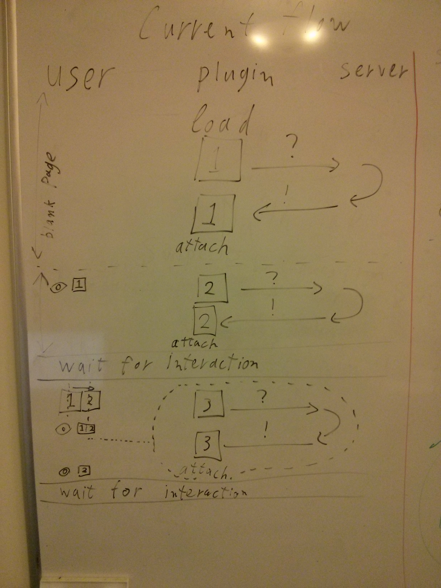 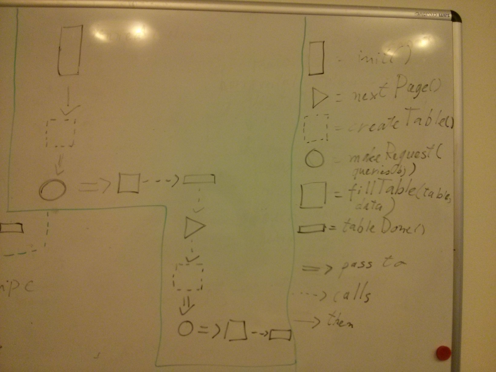 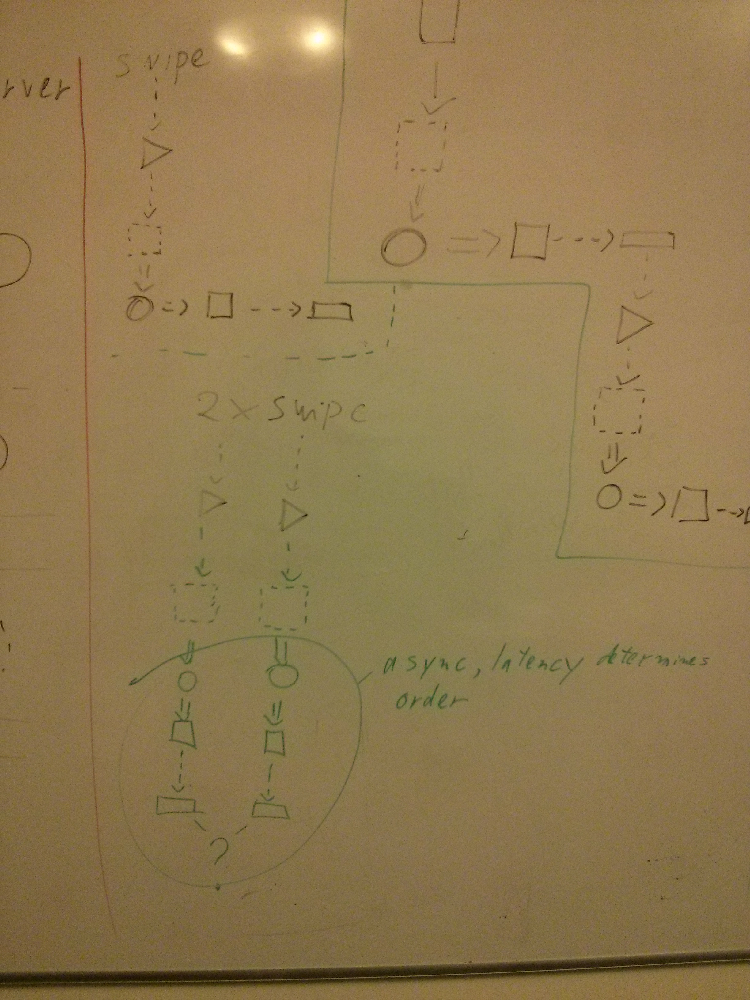
Use case data grid plugin
It's important for many automatisation applications to oversee large amounts of datasets.At Lunatech we create such applications for a number of our customers. However, the usage of such data grids tends to only run on the desktop. In fact, it is usually recommended to use a powerful desktop.
One of our logistics customers uses shipping data from within the warehouse and therefore need a desktop setup on site. It would be preferable to use a tablet to be able to access this data as portability would be a huge asset. Memory and CPU constraints make this a non-viable option.
To make a light weight web front-end we need to know how to serve and render the data in way that will work on Post-PC devices. How small can we go?
Introduction
To get a better picture of what the case requires, we are going to look at factors affecting performance and mobile user experience. Advice will then be given based on the more suitable options available. Since the case is focused on mobile performance, the factors that can affect performance must be researched. The representation of data is also important since we are dealing with a smaller screen and most tools cover desktop usage. Topics that are covered: Performance, Mobile User Experience.
Performance
There are different aspects of performance that are applicable in this case. Aspects that we can't control are the browser’s rendering performance and the performance of the device’s network environment. We'll be focusing on the areas that can be under our control.
A big part of the performance is what the plugin actually tries to do. The plugin can load all the data or only part of it. The plugin can sort the data or let the data source(back-end server) sort it. The plugin can keep the data it receives for further use or fetch data from the data source on each action. All of these actions and behaviors affect the performance of the plugin in a positive or negative way. Basically, the less the plugin has to do, the more performant it is.
Options to increase the performance of the plugin:
- Let the data source handle sorting
- Retrieve the data in parts instead of a whole
Options to increase the performance of the browser:
- Do not use helper libraries such as jQuery
- Keep as little data in memory as possible
- Prevent DOM reflows and repaints where possible
As far as available plugins go, none that have been found are mobile oriented. The provided plugin demos have been tested on a Nexus 4 using stable Chrome browser. Simple tables performed well but were hard to navigate. SlickGrid's scrolling table performed terribly on mobile, on desktop it had great performance. They typically have a (configurable) large feature set.
Notable researched JavaScript table plugins:
- DataTables
- jTable
- SlickGrid
Mobile User Experience
Interfaces on mobile devices have different environments than on desktops, where tabular data is typically viewed. The available display size determines(to a point) how much data/information you can present to the user. The amount of columns that can be displayed is further limited by the orientation of the display.
There are plugins which only deal with presenting a table for a portable device. Most of these plugins are built for jQuery. Those that don't tend to use a combination of CSS and JavaScript to present the table.
The blog post Responsive Data Table Roundup(January 11 2012, Chris Coyier) consolidated different methods on adapting the layout of a table to smaller displays. I agree with arguments in the post so I won't be restating them here. A copy is provided in the appendix.
Advice
For the sake of performance the plugin should be as lightweight as possible. The plugin should only handle part of the data in the form of pages. The representation can be via pagination or a continuous list, but testing with SlickGrid shows that a continuous list might not be the best choice. Consider that the data will have to be fetched, manipulated and displayed extremely fast for the list not to have gaps.
The case does not mention editing the data so until clarified assume a read-only scenario.
The case does not discuss the form that the data should be represented. It doesn't mention if columns or a subset of the data can be omitted. If all of the data needs to be accessible, Zurb's Responsive Tables seems the most viable. All of the data will be viewable and the user can still compare items. If touch is used, it also seems more intuitive to scroll by touching the scrollable element of the table.
An alternative is David Bushell's method, although it is not that intuitive. It will need to be tested to see if it is actually viable.
Remaining Considerations
As the case doesn't mention accessibility, it wasn't explicitly researched. Do keep in mind that some manner of accessibility is inherent in any interface, we are dealing with humans after all.
Security also wasn't mentioned by the case. Because the product is a plugin, we can assume that the plugin's environment will be secure enough for the use of the plugin. I don't think it's the plugin's responsiblity to be secure, only to display the data.
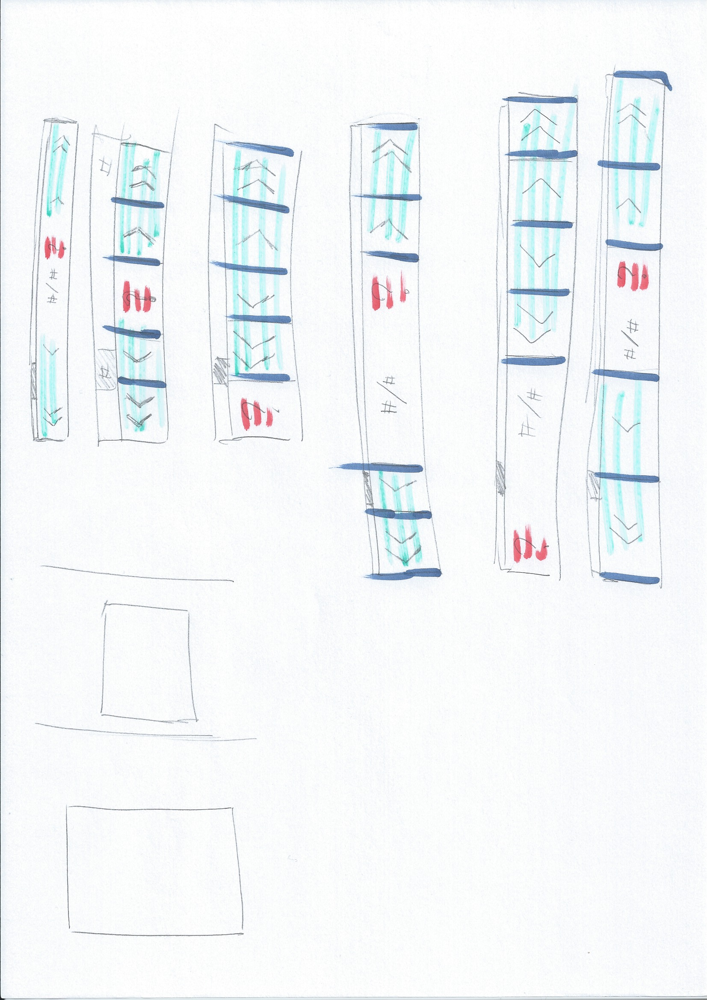 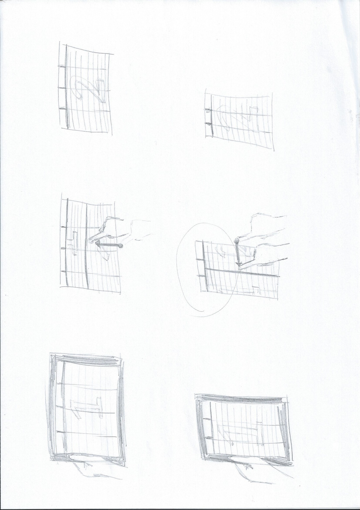 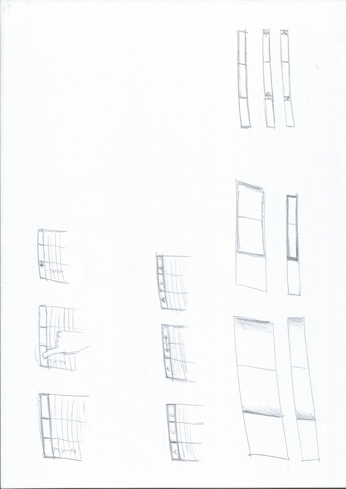 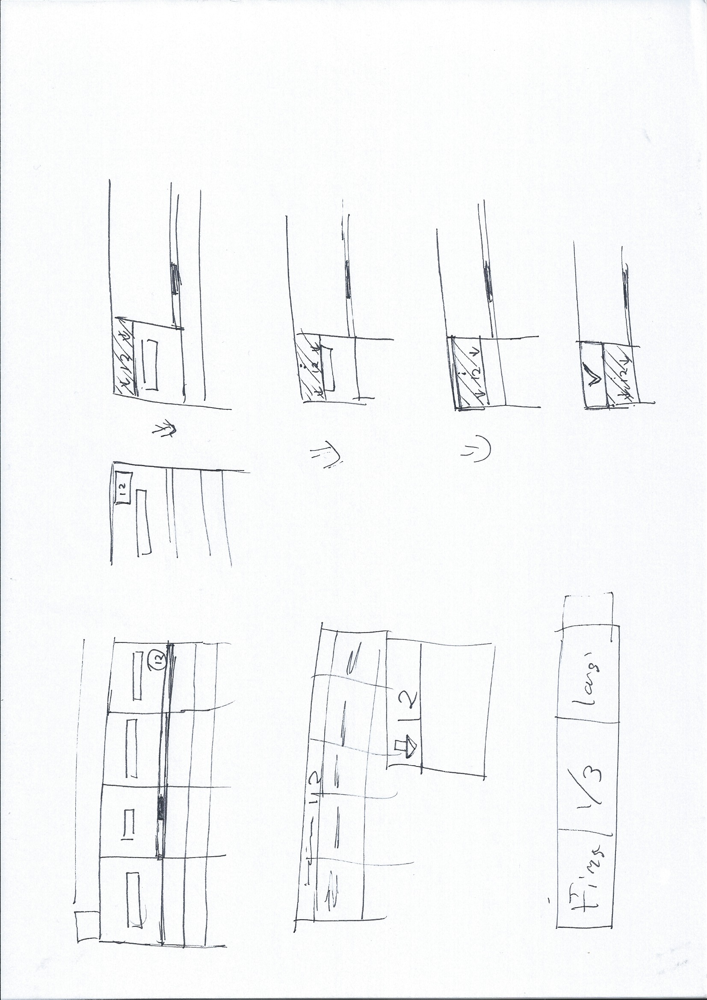 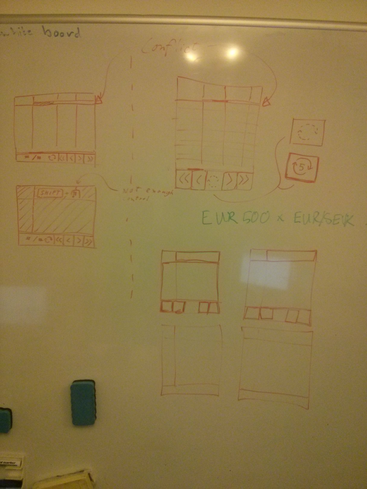 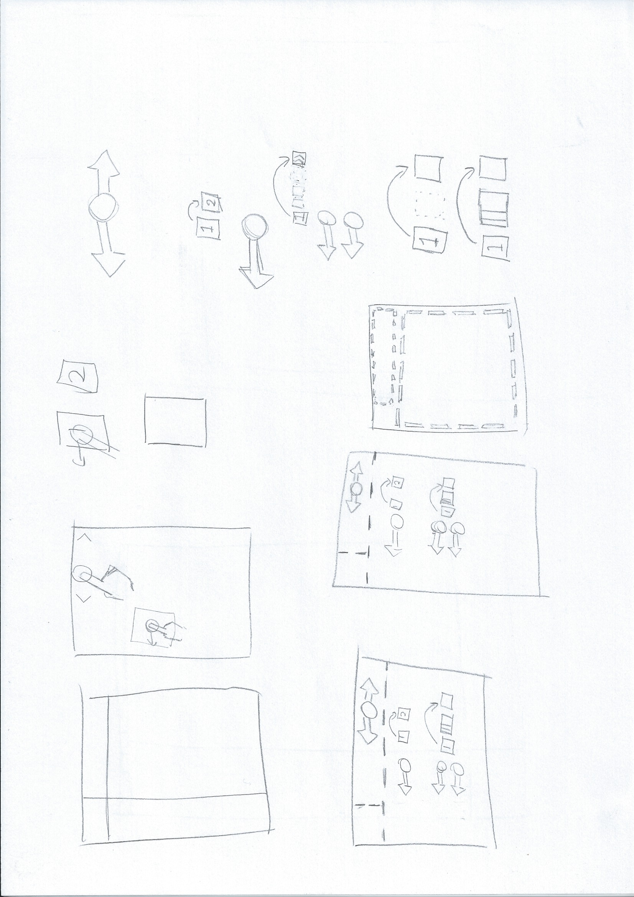
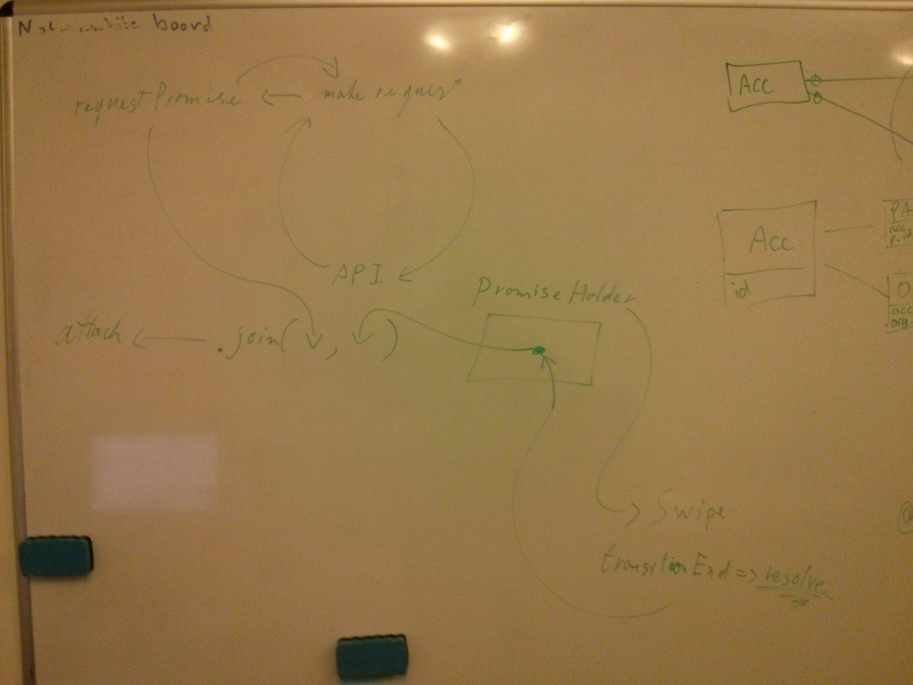 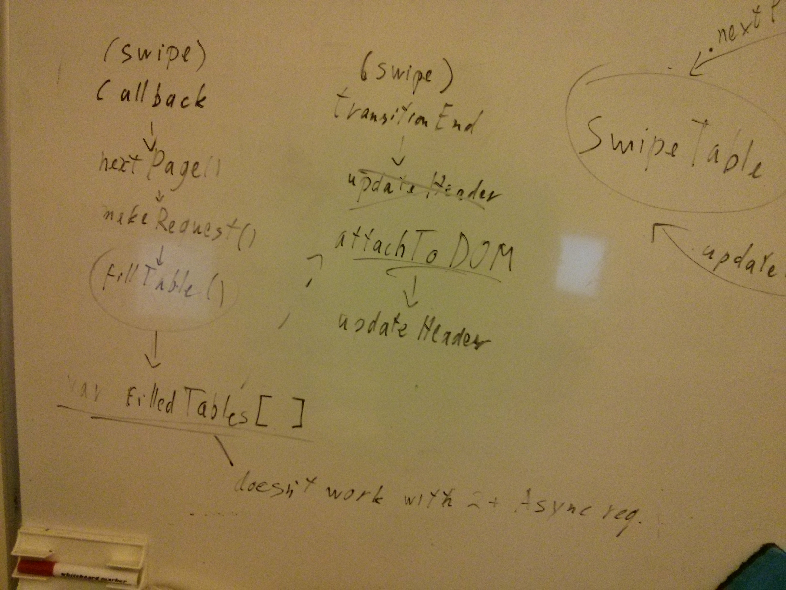
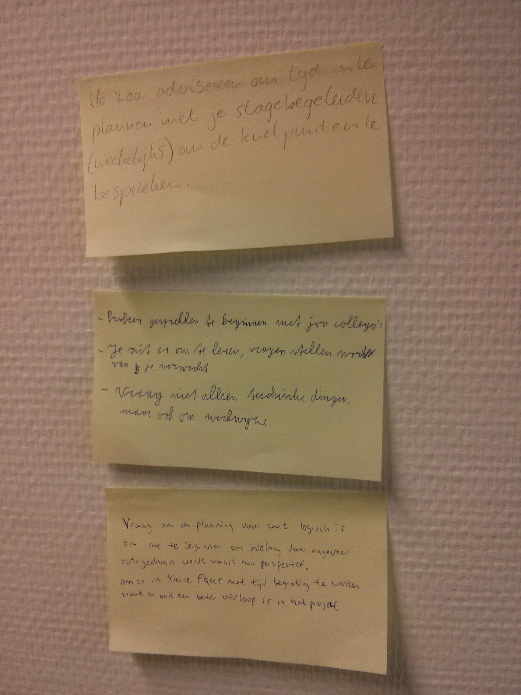 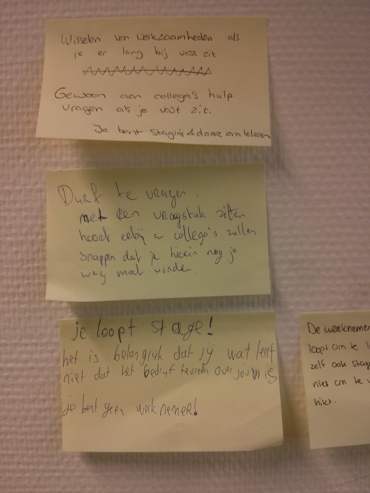 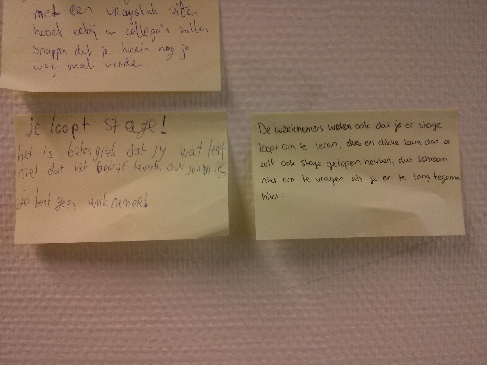